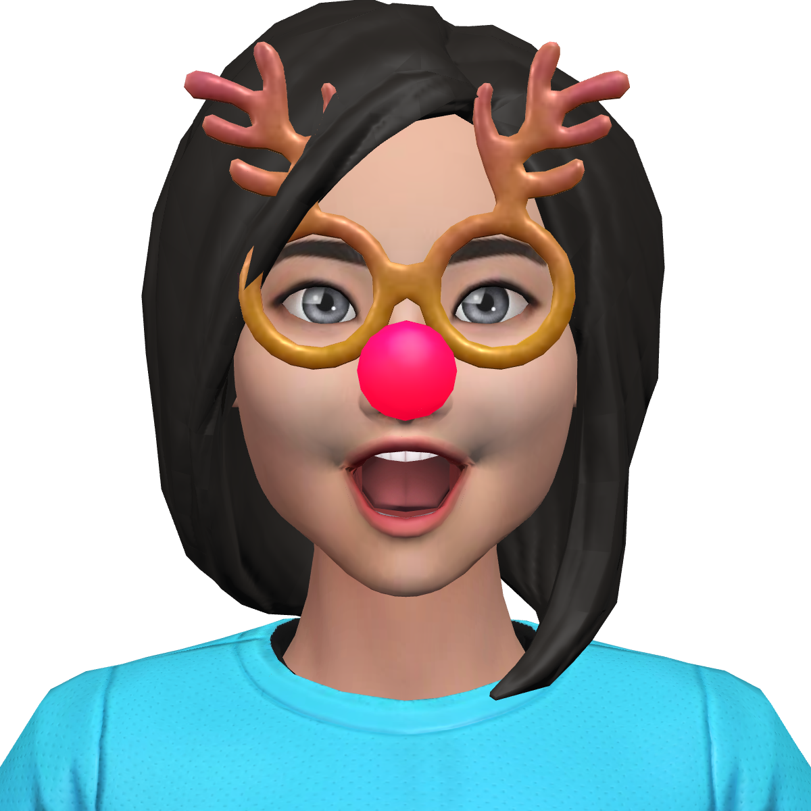
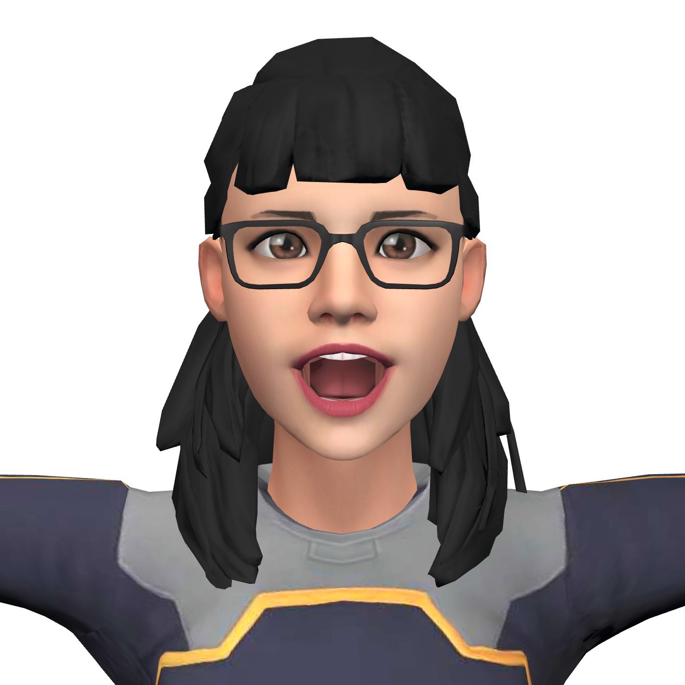
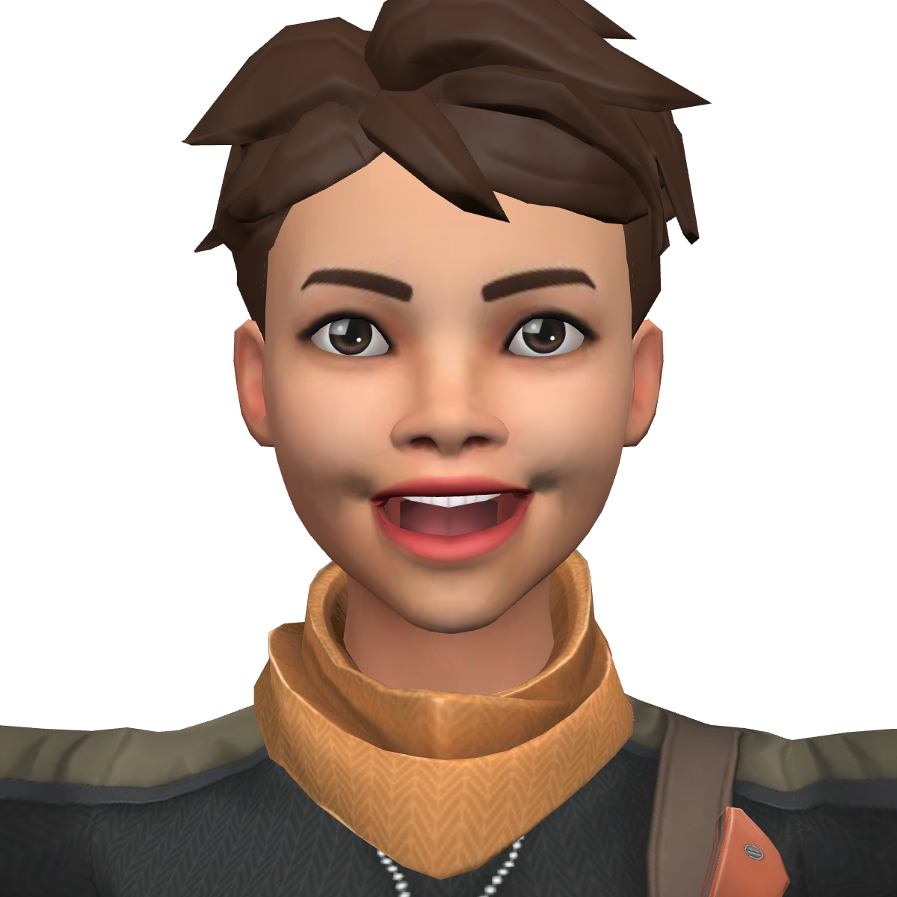
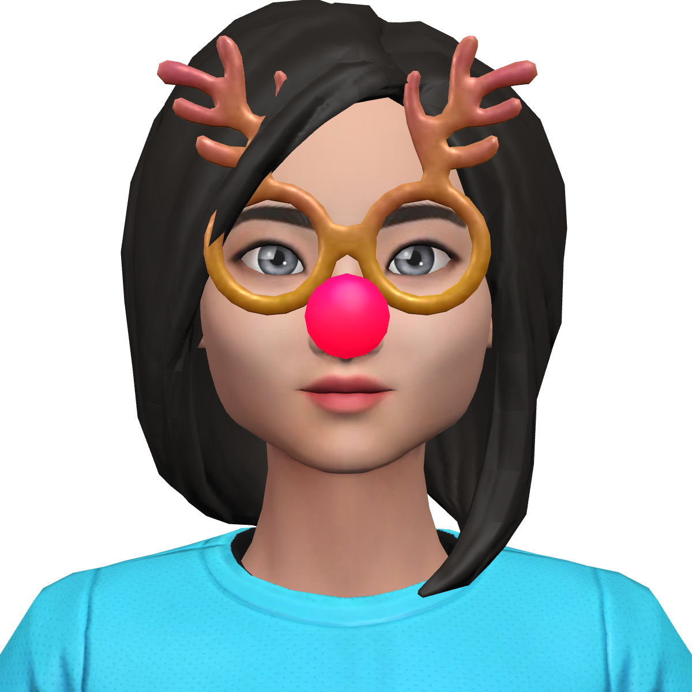
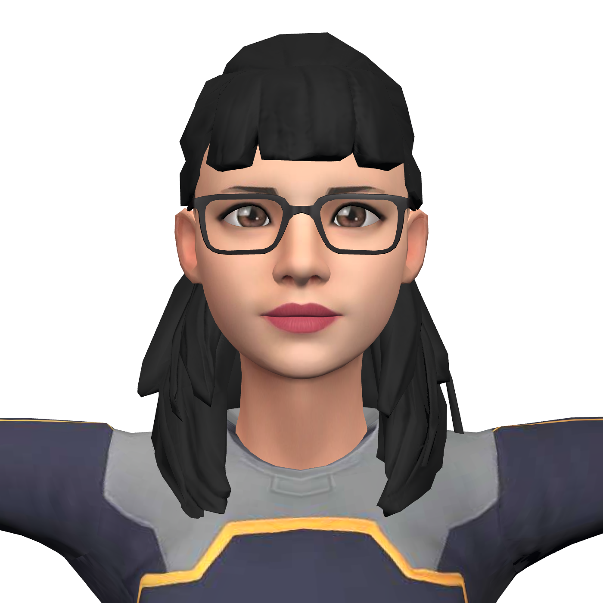
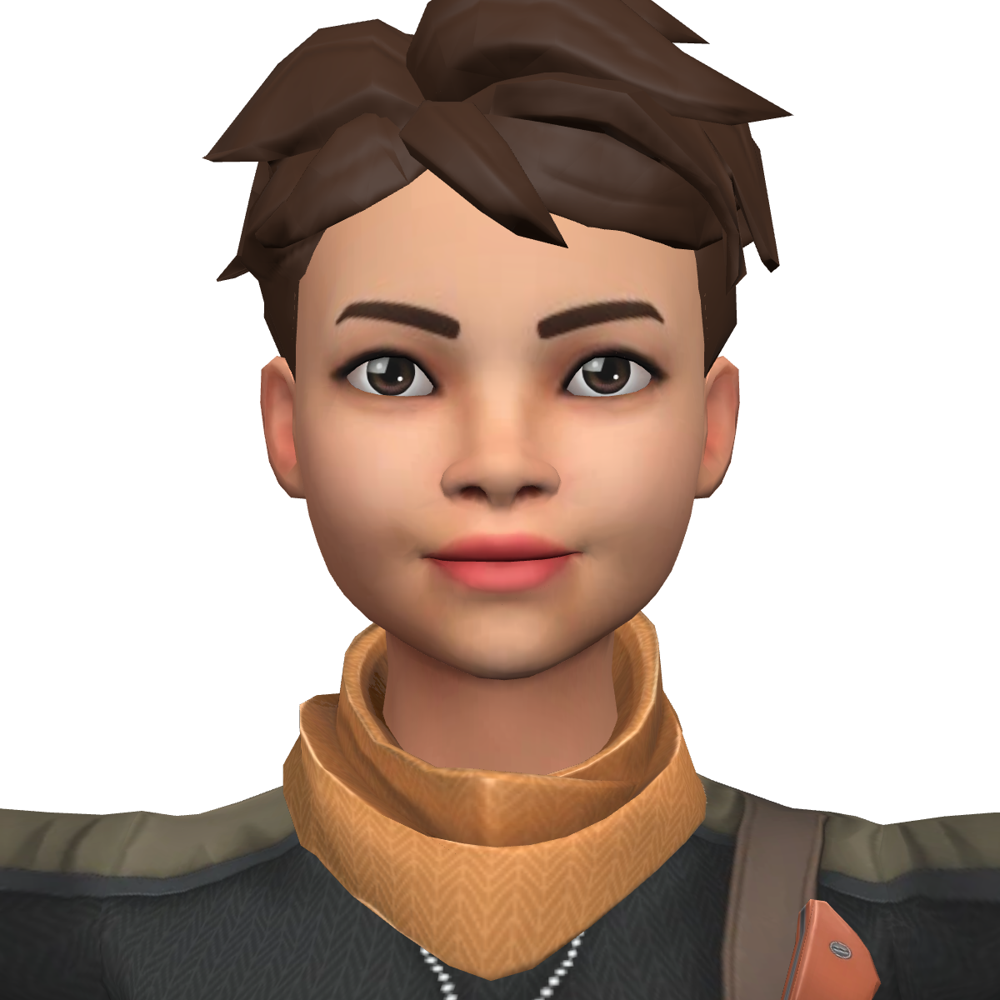
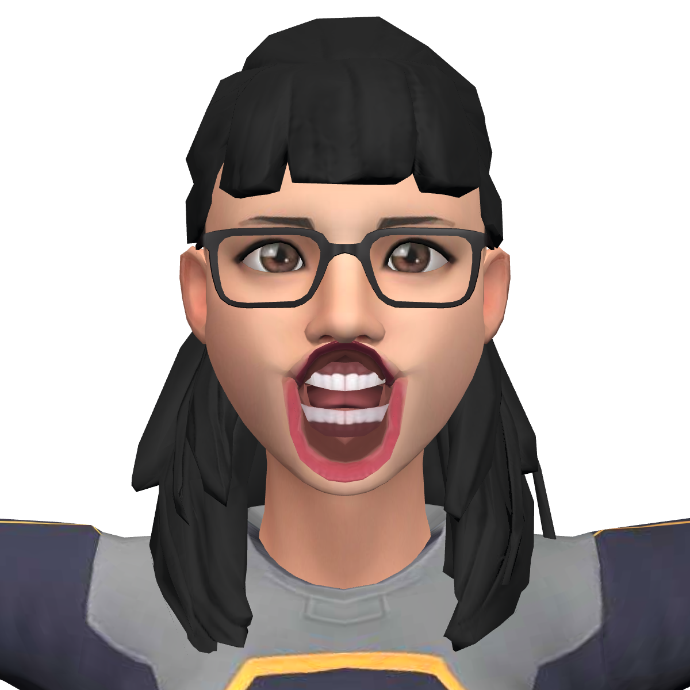
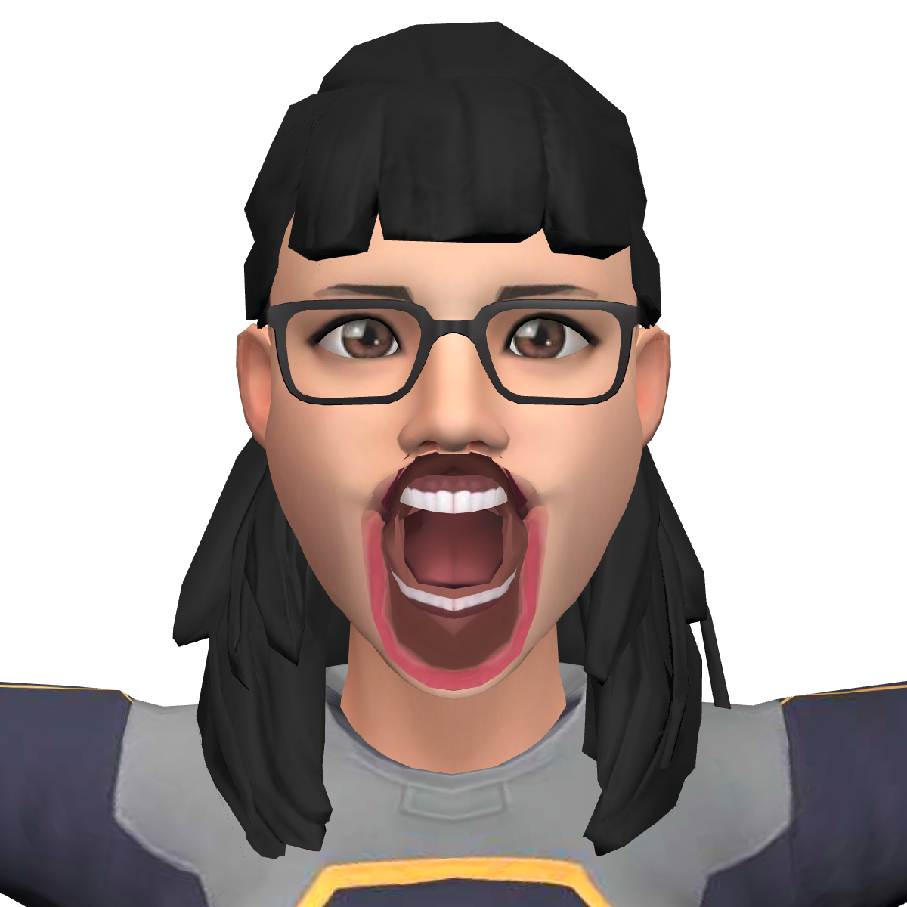

98.1% of user-uploaded rigs with morph targets animate from one Audio2Face-3D track, with no per-rig retargeting step, at a median 3.8 s from text to speaking face.
Speech-driven facial animation ships as a fixed blendshape vocabulary, but the avatars people actually bring to a browser do not share one.
Audio2Face-3D emits 52 ARKit shapes plus tongue and head pose at 30 fps. On a platform where users upload, fork, auto-rig, and reconstruct their own characters, the receiving mesh exposes ARKit names, VRM vowels (Aa Ih Ou Ee Oh), Oculus visemes (viseme_aa …), vendor spellings, or no morph targets at all. In our sample, 54.9% of files carry no facial morphs at all, and 11 of 211 of the morphed files expose no ARKit mouth shape under any spelling.
Goal. Drive every rig a user brings from the same track, in the browser, with no per-rig authoring, no model-side retargeting, and no frozen faces when coverage is partial.
Constraints. Audio must stay perceptually synchronized with the mouth; the client is a web page (no native runtime); rigs are untrusted glTF with meshopt and Draco compression, quantization, and arbitrary node structure.
nemotron-3.5-lightning-30b-a3b via NIM) produces the reply and tool calls.{fps, blendShapeNames, frames[{t, w[55]}]}.At attach time the player inspects every morphed mesh once and binds each morph target to one of two paths. Per frame it does no string work: the track is sampled by the audio element's clock with linear interpolation, so the mouth cannot drift from the sound even when frames drop.
A morph name is canonicalized (case, separators, an ARKit_ prefix stripped) and, if it resolves to one of the 52 ARKit shapes, it is driven by that track column verbatim.
A VRM vowel or Oculus viseme morph v with published ARKit composition cv receives the weighted mean of the ARKit frame a over its components, the inverse of the authoring map:
w(v) = clamp01( Σk a[k] · cv[k] / Σk cv[k] ) // composition tables (excerpt) viseme_aa: { jawOpen: 0.95 } viseme_O: { jawOpen: 0.50, mouthFunnel: 0.55 } viseme_PP: { mouthClose: 0.90, mouthPressLeft: 0.40, mouthPressRight: 0.40 } Ou (VRM): { mouthFunnel: 0.70, mouthPucker: 0.40, jawOpen: 0.20 }






A2FPlayer.attach(), so the classification is the production code path, not a reimplementation.jawOpen column and the visemes derived from it stack: the mouth saturates in 23% of voiced frames (peak 6.1× the authored opening) instead of 0%.

ARKit_jawOpen, jaw_open, JawOpen) that an explicit rig list would have missed.requestAnimationFrame. Drift was the first bug users noticed and the cheapest to remove.mouthRollUpper) are lost on viseme-only rigs. Head pose columns are applied only when a head bone exists. 54.9% of uploaded files have no facial morphs, which no mapping can fix.